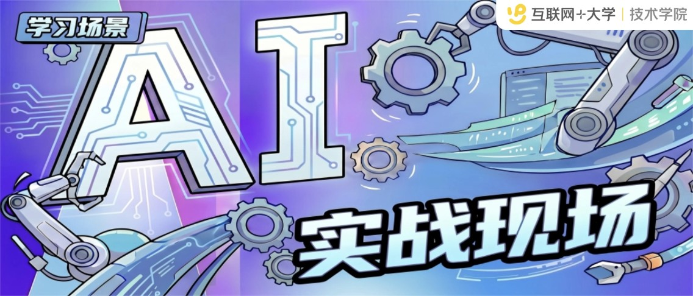

⚠️ 注意（仅供阅读）：此内容为简化版 Markdown，仅供阅读和总结，
不可直接用于 createDocument --content 或 updateDocumentByXml。
如需编辑文档，请使用
getDocumentXml获取完整格式后再通过updateDocumentByXml回传。直接用此内容编辑会丢失样式宏、合并表格、NodeID 等关键信息，导致文档数据损坏。

✍️写在前面✍️
随着 AI 工具 已深度融入到我们的日常工作中，相信大家主要的困惑已从「不会用AI工具」转变为「想不到使用场景」。比如：知道龙虾能帮忙写文档，却不清楚它还能做数据分析和内容萃取；知道 CatDesk 能实现零代码开发应用，但觉得"那得是技术同学才能做的事"，从没想过自己也能搓一个....同时也想知道和自己岗位相似的同学，TA们是如何在日常工作中借助 AI 工具提效的。
为此，我们推出「AI实战现场」系列栏目——每期聚焦一个真实的 AI 使用场景，不讲理论，只看实战案例。小而美、可复用、能落地是本栏目的宗旨。希望通过持续萃取和传播真实实践案例，帮助大家从中获取启发与借鉴，找到属于自己的 AI 实战用法。
⚠️小编特别提醒： 案例来源为真实场景、真实案例、真实踩坑，希望能够给你一些灵感参考。为保护个人隐私，文中人物已作化名处理。
🎯本期案例🎯
案例适用对象：
🚩 工作中需要大量啃文档、读规范、看产品介绍的人
😫 信息输入量大，但吸收效率低的人
🧑🏻💻 有学习意愿，但经常被复杂内容劝退
小A，是产品序列的普通员工，工作三年，每天不是看需求，就是开评审、排项目。近一年AI浪潮扑面而来，她也知道自己不能落下，可是越想学，越容易焦虑：Prompt工程、Agent训练、AI最新资讯……每个都重要，每个都像在说"你得赶紧补上"，她不是没东西可学，而是东西太多了，完全学不进去。
有次她打开一份上万字的 AI 资料，想着这次一定认真看完。结果读到第三节，术语越来越密，逻辑越绕越深，看到一半，眼睛还在扫，脑子已经不跟了——像是读了很多，又像什么都没留下。最后，她还是把文档放进了收藏夹，安慰自己一句："等有空再看。"但这种"有空再看"，大多数时候，其实就是"先放着吧"。
这不是不努力，而是硬啃长文这件事，本来就很消耗人。没有重点，没有引导，没有反馈，读完整篇，最常见的感受不是"我学会了"，而是"我好像看了，但又像没看"。
后来，小A发现了团子老师，用 AI精读 + AI讲解 两个功能啃下了原本已经放弃的内容。
| 学习场景 | Before | After |
|---|---|---|
| 长文入门 | 硬读或放弃，收藏吃灰 | AI精读先建框架，5分钟判断值不值得学 |
| 深度学习 | 自己整理笔记 | AI讲解自动生成讲稿+PPT+视频 |
跟随小编，我们一起来看看小A具体是怎么使用团子老师的吧~
以学习《Top Talk微刊：Agent时代，重建坐标系——"龙虾热"下的冷思考》为例
| 典型场景 | 演示实操 |
|---|---|
| Step 0：如何找到团子老师 |
1. 直接点击网页版链接（团子老师入口）；（本案例主要围绕网页版团子老师展开） 2. 大象直接搜"团子老师"，也能用，直接与它对话即可，交互更便捷！ 3. 工作台搜"互联网+大学AI探索版"也可以哦~ |
| Step 1：把文档喂给团子老师（粘贴/链接/上传，支持学城、PDF、Word） | 将文档链接或内容粘贴/上传给团子老师即可开始学习。 |
|
Step 2： 📖 AI精读——先建框架：三层结构拆解、思维导图、知识卡片。适合想深度吃透内容、系统拆解知识点的同学。 🎙️ AI讲解——右下角随时提问团子老师，有问必答！——适合想随时互动、即时答疑的同学。 |
选择 AI精读 或 AI讲解 模式，开始与文档互动学习。 |
| Step 3：有重点想记录，可以划线标记；精彩句子想分享，还能一键生成划词卡片！ | 阅读过程中随时划线标记，或生成精彩内容的分享卡片。 |
|
Step 4（可选）：想深学：选水平+风格，自动生成讲稿+PPT+视频，还能下载带走
|
根据自身水平和风格偏好，一键生成可下载的讲稿、PPT 和视频。 |
小A觉得，有些资料，难的不是内容本身，而是只能一个人闷头去啃。
如果这时候，有人陪你一起拆重点、理思路、接住那些没想明白的问题，很多原本读不下去的内容，就会慢慢顺起来。
团子老师，就是这样一个陪我们一起学、一起聊、一起成长的伙伴。
供稿：互联网+大学 | 在线学习 访谈整理：互联网+大学 | 技术学院